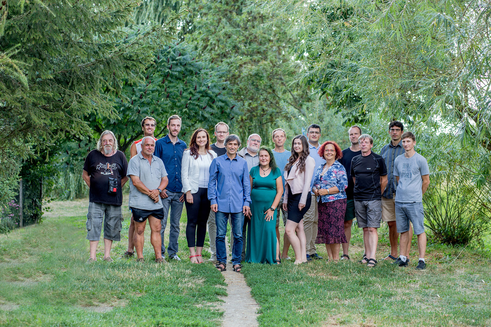

Shoreline
Třebíč je nejkrásnější město na světě. V něm jsme se narodili, vyrostli a společně žijeme. Přirostlo nám k srdci díky bazilice svatého Prokopa nebo tajuplným uličkám Židovské čtvrti, ale také díky šikovným a pracovitým lidem, kterých je plné. Proto chceme pro Třebíč pracovat i další čtyři roky. Usilujeme o to, aby byla přátelským a otevřeným městem pro své občany, příležitostí pro investory a zážitkem pro turisty. Chceme Třebíč:

Opravenou
Aby byla Třebíč nadále perlou Jihozápadní Moravy, potřebuje revitalizaci či opravu:
- Karlova náměstí s vodními prvky a zelení,
- zimního stadionu a autobusového nádraží,
- plovárny na Polance včetně zřízení vodáckého tábořiště,
- sportovních hal pod Kostelíčkem a na ul. Manželů Curieových,
- sídliště na Nových Dvorech a ulic ve staré zástavbě v Borovině, Domcích, na Nových Dvorech a v Kočičině, prostoru mezi ZŠ Kpt. Jaroše a Vysočinou a před ZŠ Týnská i zateplení zbývajících mateřských škol.

Mountains
Another example of a project with its respective description. These sections work well responsively as well, try this theme on a small screen!